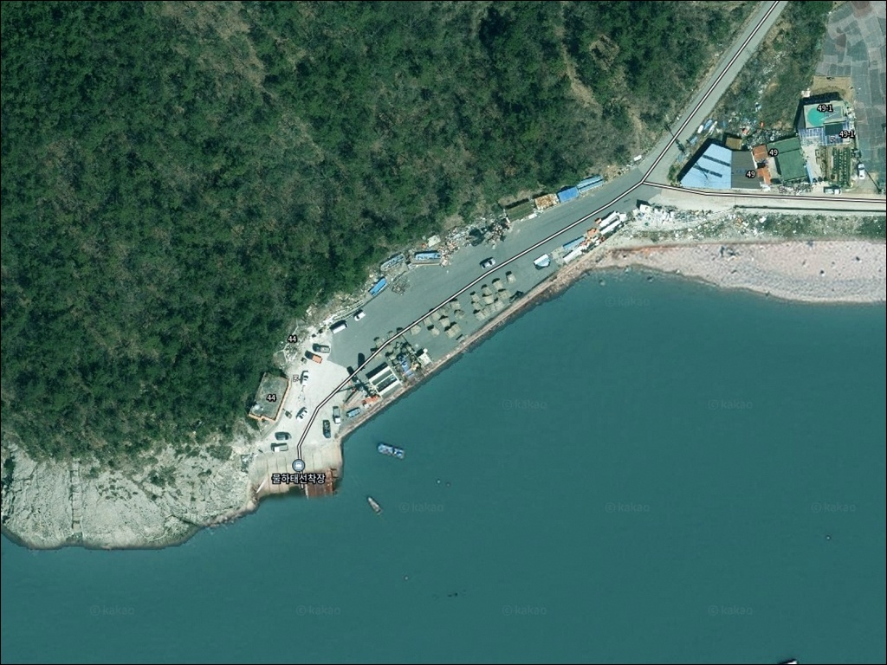
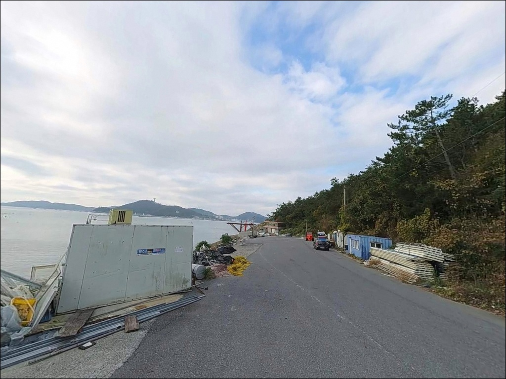
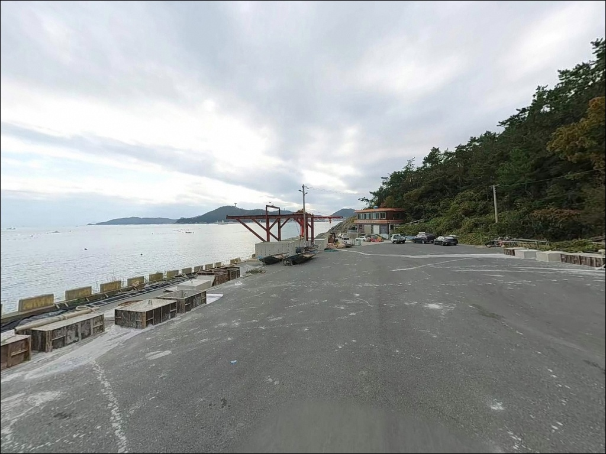
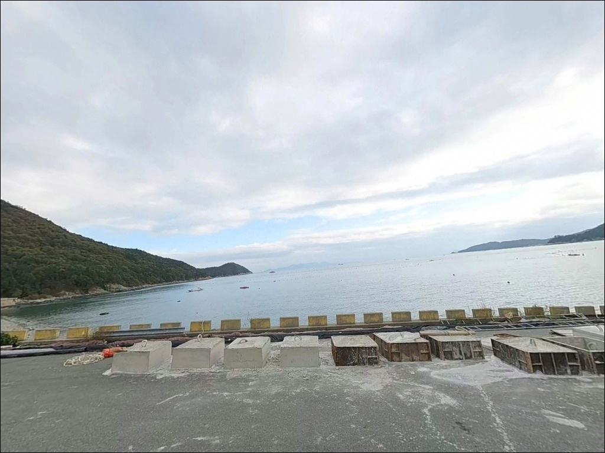
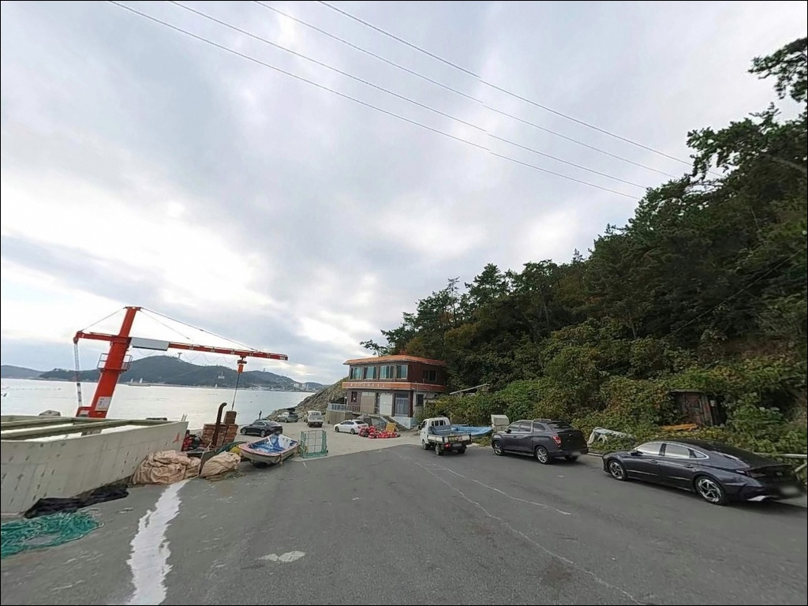
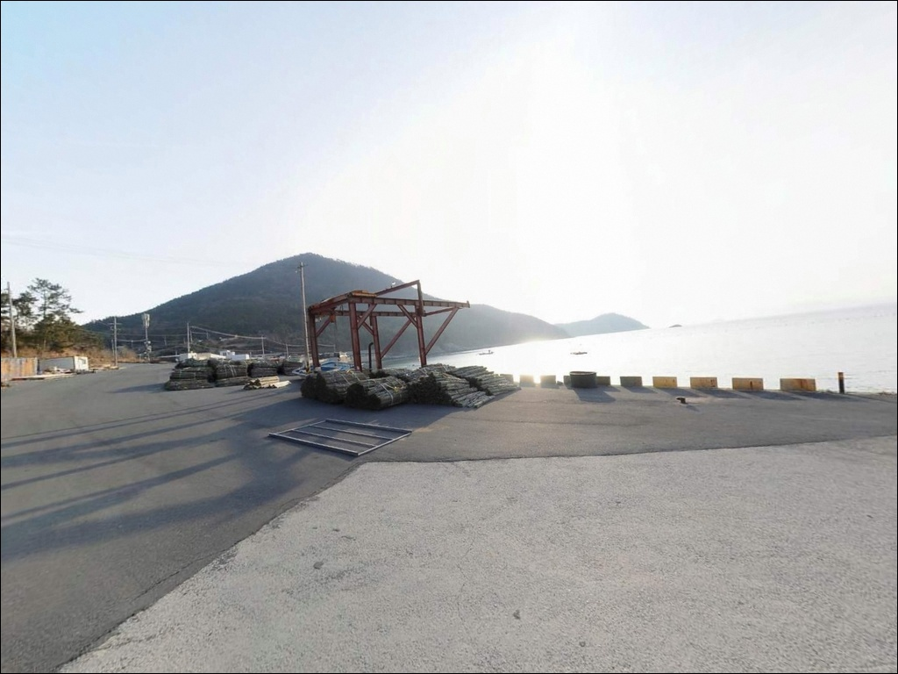
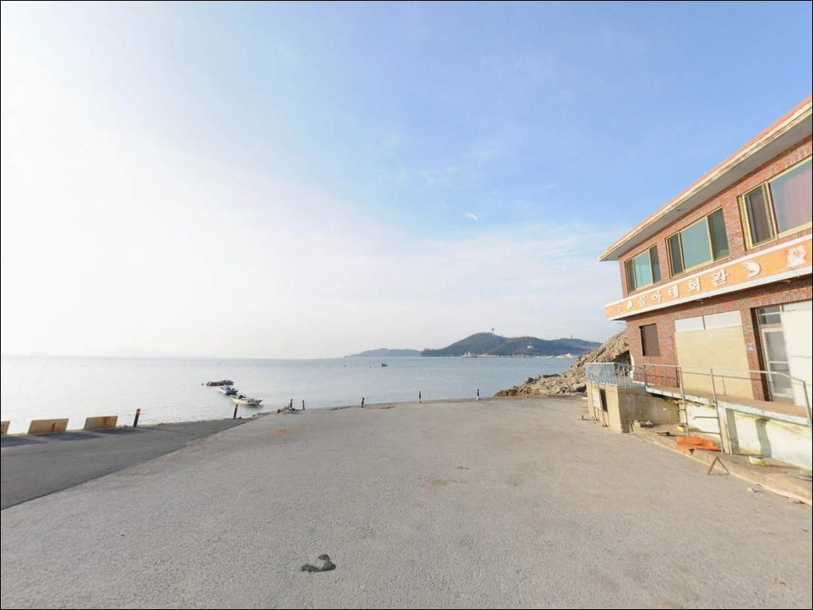
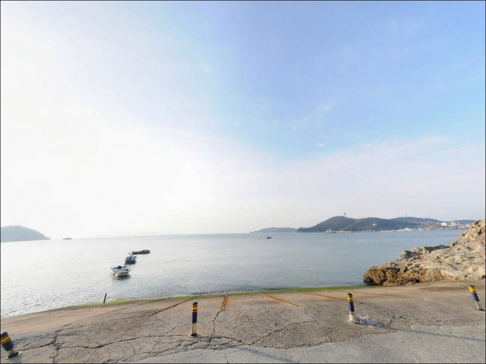
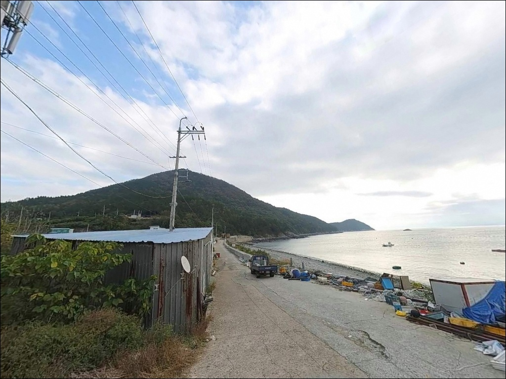

물하태선착장, 신지도 전남 완도군 접근성 좋고 조용한 바다 차박 낚시 장소 추천
이 페이지에는 광고(제휴 링크 포함)가 있으며, 광고 링크를 통해 구매하면 운영자가 판매 수익 또는 수수료를 받을 수 있습니다. 포인트 사진: 카카오맵 스카이뷰·로드뷰. 이 페이지의 지도·사진 이미지는 카카오맵의 실제 서비스 이미지와 다를 수 있습니다.


포인트 안내
물하태선착장
전남 완도군 신지면 송곡리 657-27
물하태선착장은 완도수도 수로를 마주한 구조로,
사리 물때에는 조류가 강해져
채비 컨트롤 자체가 어려워지는 수로형 포인트입니다.
물때 계산 없이 사리 전후에 입장하면
어떤 채비를 써도 흐름을 버티기 어려운
상황이 만들어집니다.
신지대교 개통 이전 완도 본도와 신지도를 연결하던
선착장으로 사용되었으며,
지금은 한적한 낚시 포인트로 알려져 있습니다.
부잔교 시설이 설치된 선착장 구조에
우측으로 갯바위 구간이 이어지는 복합 지형이라
다양한 낚시 스타일을 한 자리에서 운용할 수 있습니다.
이 글은 물하태선착장의
진입 여건, 차박 조건,
지형 기반 낚시 방식 판단에 집중합니다.
조황 단정이나 특정 어종 보장은
이 글의 범위에 포함되지 않습니다.

1. 진입 동선과 포인트 접근성
신지대교를 건너 신지도에 진입한 뒤
물하태 삼거리에서 우측으로 꺾어
시멘트 포장길을 따라 끝까지 이동하면
선착장에 닿습니다.
포장 상태가 갖춰진 도로라
승용차와 소형~중형 SUV 기준으로는
접근이 어렵지 않은 동선입니다.
선착장 내 주차 공간은 넉넉한 편으로 확인됩니다.
차박 후기가 있을 만큼
주차 여건은 이 포인트의 강점 중 하나입니다.
다만 어업 작업 공간과 겹칠 수 있으니,
어선 접안 동선을 막지 않는 자리를
선택하는 것이 기본입니다.
대형 캠핑카나 카라반은
회차 공간을 미리 확인하는 편이 안전합니다.
선착장 안쪽까지 진입하면
방향 전환이 여의치 않은 구조일 수 있으므로,
처음 방문이라면 로드뷰로 도로 폭을
사전에 살펴보고 가는 것이 좋습니다.

2. 차박 환경과 야간 체류 여건
물하태선착장 일대는 민가 밀집도가 낮고
신지대교 이전 이후 한적해진 구조라
야간에는 차량 통행이 거의 없는 편입니다.
신지대교 교량 조명이 인근을 일부 밝혀주지만,
선착장 자체 가로등 수는 많지 않으므로
개인 헤드랜턴은 반드시 챙겨야 합니다.
선착장 가장자리는 수면과의 낙차가 있는
구간이 존재합니다.
야간에는 이 구간의 위험도가 높아지므로
주차 위치를 낙차 구간에서
충분히 이격된 자리로 잡는 것이 좋습니다.
주간에 미리 낙차 구간 위치를 파악해
두는 것이 안전 체류의 기본입니다.
주차 공간이 넉넉한 편이라
낚시 후 그 자리에서 하룻밤 머무는 용도로는
나쁘지 않은 환경입니다.
다만 선착장 구역은 어업 활동 공간을 겸하므로,
어선 접안 시간대에 맞춰
자리를 비울 준비를 해두는 것이 기본 매너입니다.


3. 주변 편의시설 및 인프라 현황
선착장 반경 3km 이내에서
즉시 이용 가능한 편의시설은
신지대교휴게소입니다.
화장실과 소규모 매점이 있는 것으로
알려져 있으나,
운영 시간은 현장에서 다시 확인하는 것이 안전합니다.
편의점은 신지도 내에서 신지대교를 건너
완도읍 방향으로 약 5km 이상 이동해야
GS25를 이용할 수 있습니다.
식당은 선착장 인근에 해산물 메뉴를 제공하는
곳이 있으나, 방문 전 운영 여부 확인이 먼저입니다.
완전 자급 체제로 진입하는 것이
현실적인 준비 방식입니다.
완도읍 방향 낚시용품점은
신지대교를 건너 가용리 인근에
국제낚시, 서경낚시, 부일낚시가 위치합니다.
채비 소모가 잦은 수로·갯바위형 포인트 특성상
여분 채비는 출발 전에
충분히 준비하는 것이 기본입니다.

4. 방문 전 준비사항 및 체크 포인트
출조 전에 가장 먼저 확인할 것은 물때입니다.
완도수도 수로를 마주한 구조상
사리 물때에는 조류가 세지므로,
바다타임에서 신지면 기준 물때를 확인하고
조금 전후 또는 만조·간조 전후를 노려
출발 시각을 맞추는 것이 기본 전략입니다.
선착장 우측 갯바위 구간은
간조 전후에 접근 여건이 달라집니다.
미끄럼 방지 기능이 있는 낚시용 신발을 착용하고,
갯바위 진입 전 바닥 상태를
먼저 살피는 것이 기본입니다.
구명조끼는 선착장과 갯바위 모두에서
반드시 착용해야 합니다.
완도 권역은 기상 변화가 빠른 편입니다.
당일 아침에 기상청 예보를 다시 한번 확인하면
출조 낭비를 막는 조건이 됩니다.
수로·갯바위 특성상 채비 손실이 잦으니
여분 채비는 넉넉하게 준비하는 편이 좋습니다.

5. 수로형 포인트에서 물때가 낚시 여건을 결정하는 이유
물하태선착장은 신지대교 신지도 측 접속부
바로 인근에 위치하여
완도 본도와 신지도 사이
완도수도 수로를 마주하고 있습니다.
수로형 구간은 조류가 집중되는 경향이 있어
사리 전후에는 흐름이 강해지는 구조입니다.
반대로 조금 물때에는 조류가 느려지며
낚시 여건이 안정되는 편입니다.
선착장 주변에는 부잔교 시설이 설치되어 있어
발판이 비교적 안정적으로 구성되어 있습니다.
선착장 우측으로는 갯바위 구간이 이어지며,
차량 주차 후 바로 접근이 가능한 구조입니다.
갯바위 끝단에서는 수심 급변 구간이
예상되는 자리입니다.
수로를 지나는 회유성 어종의 이동 경로가
이 선착장 앞을 지날 가능성이 있습니다.
인근 양식장에서 유입되는 먹이 영향이
수면 활성도에 관여하는 구조이기도 합니다.
물하태선착장은 신지대교 인근 수로를 마주한 구조로,
조류 변화에 따라 낚시 여건이 크게 달라지는
포인트입니다.
최신 조황은 출조 전에 반드시 검색해 보시기 바랍니다.


6. 포인트에 어울리는 낚시 스타일
원투낚시는 이 포인트 수로형 구조에
가장 잘 맞는 스타일입니다.
선착장 바깥쪽 수로 방향으로 채비를 멀리 보내
바닥층 어종을 노리는 방식이며,
조류가 느려지는 정조 타이밍을 전후로
집중하면 채비 운용이 안정됩니다.
완도 권역에서 붕장어, 숭어, 감성돔이
기대되는 지형입니다.
에깅도 이 포인트에서 시도해볼 만한 스타일입니다.
완도 전역에서 갑오징어 분포가 확인되는 지역이고,
수로형 구간은 야행성 어종이 몰리는 경향이 있어
야간 에깅 시도가 어울리는 구간입니다.
에깅이란 갑오징어·무늬오징어를 대상으로
에기(인조 미끼)를 사용하는 루어낚시 방식입니다.
찌낚시는 조류가 느린 타이밍에 유리합니다.
완도수도 수로 흐름을 타는 릴찌 채비로
감성돔이나 볼락을 노리는 방식이며,
조류가 강할 경우에는
고부력 채비로 대응하는 편이 운용하기 좋습니다.
선착장 우측 갯바위 구간에서는
원투낚시를 병행해 볼 수 있습니다.
원투낚시란 무거운 봉돌을 이용해
채비를 멀리 던져 바닥층 어종을 노리는
낚시 방식입니다.
갯바위 끝단은 수심 급변이 예상되는 자리로,
바닥 탐색형 채비가 이 지형에 어울립니다.
선착장 안쪽 잔잔한 수면에서는
야간 소형 지그헤드 채비로
볼락과 우럭을 탐색하는 라이트게임도
가능한 구간입니다.

7. 대안 포인트와 플랜 B 동선
물하태선착장이 여의치 않을 때
가장 먼저 이동하기 좋은 대안은
동고리방파제입니다.
신지도 동단부에 위치하며
물하태선착장보다 개방된 외해 방향에 놓여
낚시 여건이 다른 구간입니다.
조류와 파도 영향을 더 받는 구조이므로,
기상 상태를 확인한 뒤 이동 여부를
결정하는 편이 좋습니다.
신지대교를 건너 완도읍 방향으로 이동하면
완도항 방파제와 씨월드 방파제가 있습니다.
바다타임 낚시 포인트 DB에 등록된 포인트로,
수심과 낚시 다양성 면에서
물하태선착장보다 선택지가 넓습니다.
완도읍 낚시용품점과 인접해
채비 현지 조달도 가능한 구간입니다.
차박 여건이 여의치 않다면
신지 명사십리해수욕장 인근이 대안입니다.
여름 성수기를 제외하면 광활한 공간에서
차량 접근이 상대적으로 수월한 편이며,
주차 여건은 선착장보다 안정적입니다.
다만 야영 가능 여부는 관할 기관 확인이 먼저입니다.

신지도 수로 선착장,
준비한 만큼 낚시 여건이 달라지는 포인트입니다
갯바위 구간까지 이어지는 복합 낚시 포인트를
즐기는 낚시인이라면
물하태선착장의 지형 구조는 흥미로운 구간입니다.
선착장 바깥쪽 수로와 우측 갯바위를
동시에 탐색할 수 있는 구조라,
원투낚시, 에깅, 라이트게임을
한 자리에서 번갈아 운용하기 좋습니다.
반면 물때 계산 없이 사리 전후에 도착하거나
갯바위 구간에 미끄럼 방지 장비 없이 진입하면
낚시보다 안전에 더 신경 써야 하는
상황이 만들어집니다.
물때 확인, 갯바위 안전 장비, 여분 채비,
이 세 가지를 갖추고 가면
신지도에서 조용하고 집중력 있는
낚시가 가능한 포인트입니다.
신지대교를 건너 도착하는 한적한 선착장에서
수로 조류를 읽으며 하룻밤 머무는
차박 낚시 출조라면,
물하태선착장은 기억에 남을 만한
자리가 될 수 있는 곳입니다.